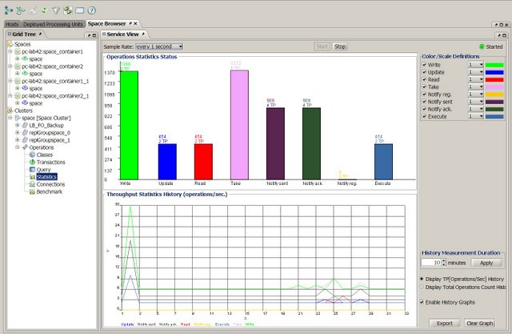
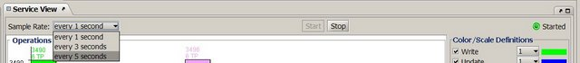

The Statistics view provides information on operation statistics in the Space, such as read, write, take, etc. If you have a system with MemoryXtend, you can also see statistics for the off-heap driver and the disk storage (RocksDB) driver.
The Operations tab provides a graphical representation of Space operations performed and average throughput.

The graph in the upper area of the tab displays the total number of operations performed in the Space. The legend on the right side shows the color that represents each operation in the graph. You can select and clear the check boxes as necessary to show or hide data for the different operations in the graph.
The graph in the lower area of the tab display the following information, depending on the selected option:
Use the following options to modify the view behavior:
The MemoryXtend tab is only visible if you have MemoryXtend in your system. The tab displays cache statistics for the off-heap storage.
If you have the disk storage driver configured, you can also view the blobstore (RocksDB) statistics.

You can choose to refresh the statistics display periodically. When auto refresh is running, a green blinking dot is displayed on the right side of the screen. Select the desired refresh rate from the drop-down menu. To stop the statistics automatic refresh, click Stop.

Auto-refresh activity impacts server performance, so you might want to stop it when running benchmarks.